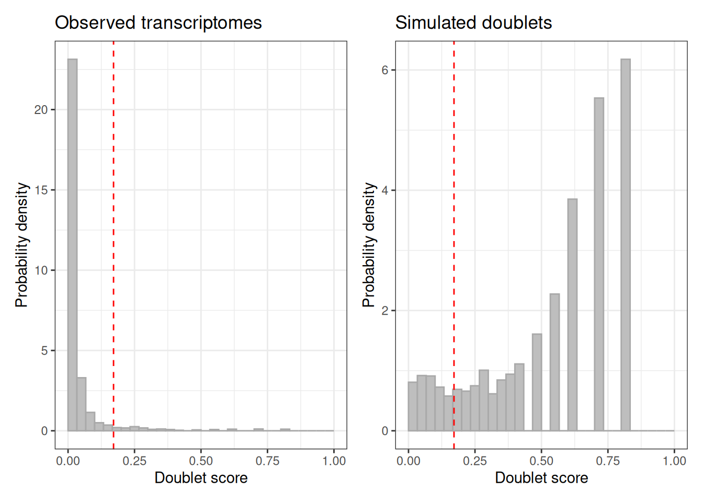
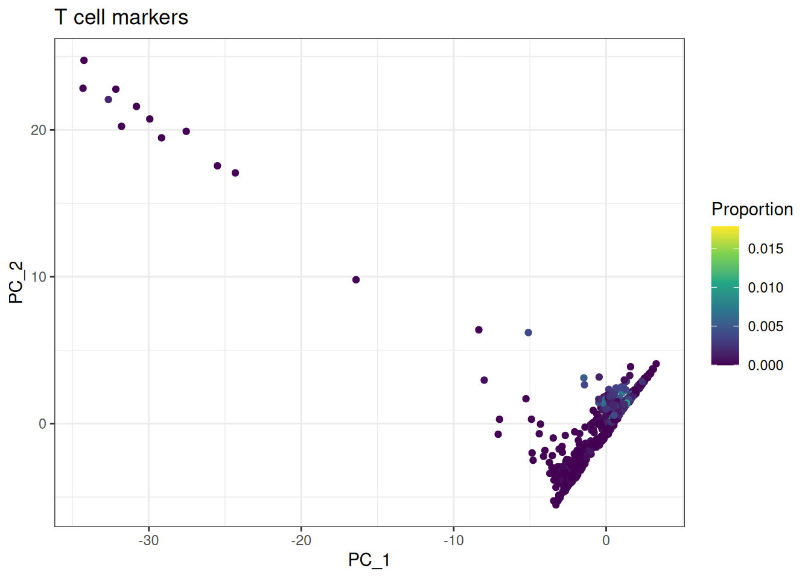
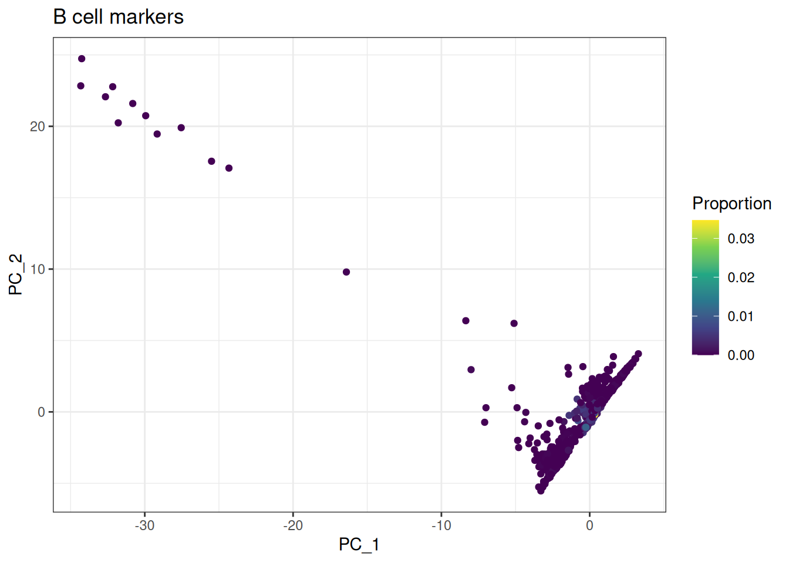
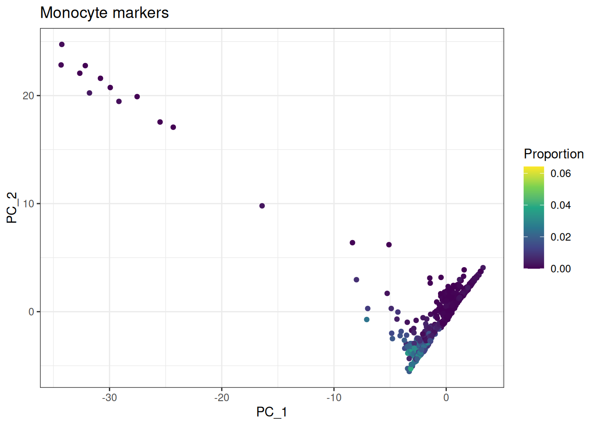
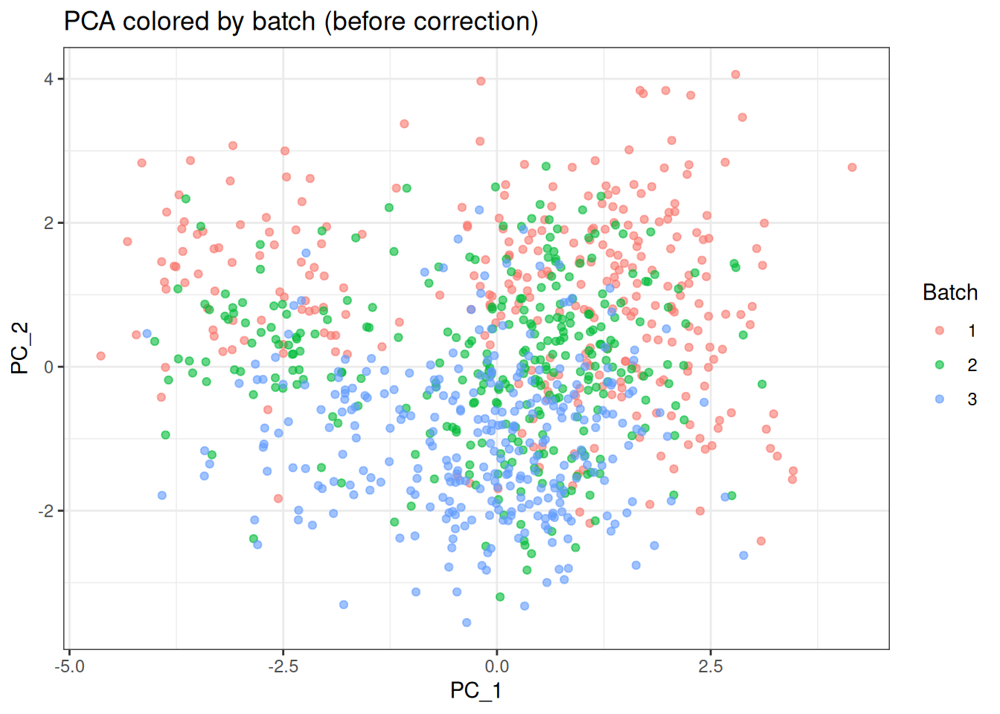
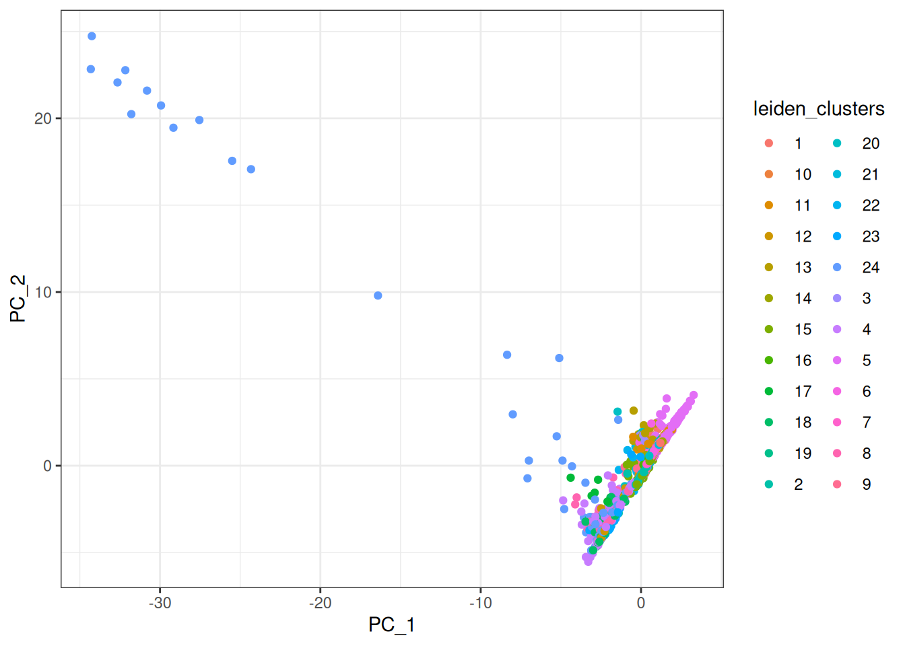
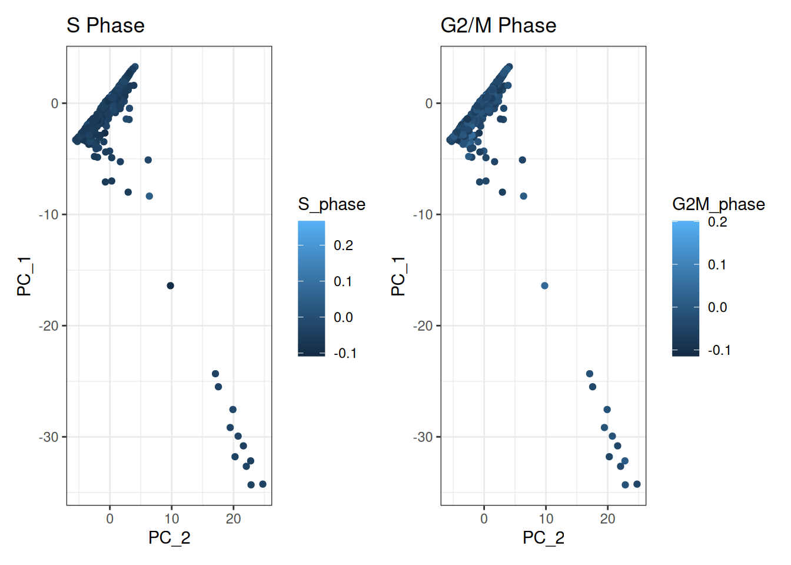
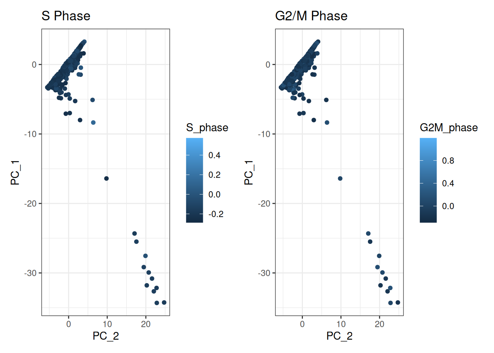
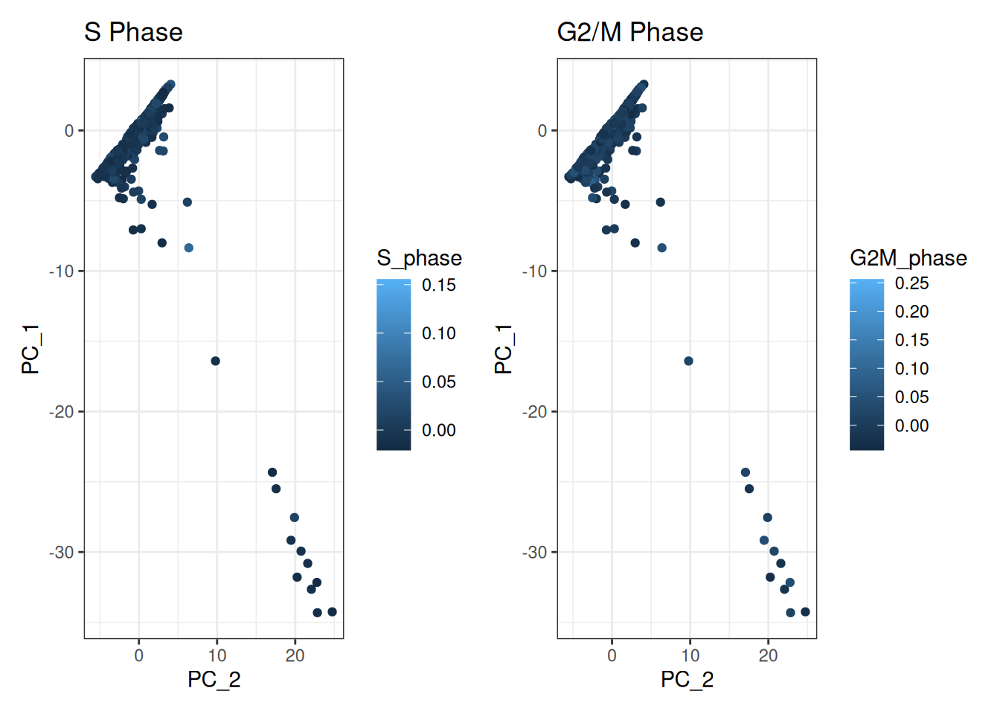

Single Cell Analysis
Introduction
This vignette shows how to use the bixverse package to perform single cell analysis.
Problem statement
The size of single cell datasets is growing rapidly, however the computational tools used to to analyse them are not keeping up. The current tools solution ot bigger datasets is just use a larger memory machine, however this is not always possible especially if analysis is required to be run locally on a laptop.
The aim of this package is to make it possible to analyse single-cell datasets containing millions of cells on a standard laptop. This is achieved through an out-of-memory design where large data objects—such as count matrices and cell or feature metadata—are stored on disk rather than held entirely in memory. Metadata tables are managed through DuckDB, allowing for fast and efficient access to subsets of the data when needed. While it may seem like overkill to use a duckdb to store the obs and var tables for 100,000 cells these tables can quickly become very large with millions of cells and become unwieldy to hold in memory on a standard laptop.
Computationally intensive tasks are handled by Rust back-end utilities that stream data from disk, perform the required operations, and return results to R. This approach combines the ease of use of R with the speed and efficiency of compiled Rust code, enabling high-performance single-cell analysis with minimal memory requirements.
Create test data
## This function is used to create synthetic data
single_cell_test_data <- generate_single_cell_test_data()
f_path_csr <- file.path(tempdir(), "csr_test.h5ad")
write_h5ad_sc(
f_path = f_path_csr,
counts = single_cell_test_data$counts,
obs = single_cell_test_data$obs,
var = single_cell_test_data$var,
.verbose = FALSE
)
single_cell_test_data <- generate_single_cell_test_data()
f_path_v1 <- file.path(tempdir(), "cells_csv")
f_path_v2 <- file.path(tempdir(), "genes_tsv")
dir.create(f_path_v1, showWarnings = FALSE, recursive = TRUE)
dir.create(f_path_v2, showWarnings = FALSE, recursive = TRUE)
counts_csc <- as(single_cell_test_data$counts, "CsparseMatrix")
# save a version with rows = cells and format type csv for the rest
write_cellranger_output(
f_path = f_path_v1,
counts = single_cell_test_data$counts,
obs = single_cell_test_data$obs,
var = single_cell_test_data$var,
rows = "cells",
format_type = "csv",
.verbose = FALSE
)
# save a version with rows = genes and format type tsv for the rest
write_cellranger_output(
f_path = f_path_v2,
counts = single_cell_test_data$counts,
obs = single_cell_test_data$obs,
var = single_cell_test_data$var,
rows = "genes",
format_type = "tsv",
.verbose = FALSE
)Single cell data processing using bixverse
Load in data
The core of the single cell analysis is createing a sc_object this object contains the connections to the data on disk that can be accessed in rust and accessed and indexed by the duckdb.
Here we are setting the path to store the duckdb and files to tempdir but in reality you want to keep these accessible such that you can always access the data.
When generating the sc_object an sc_qc_param will need to be set, this defines the parameters used to filter out low-quality cells at the outset of the analysis. These cells are excluded during the creation of the on-disk data, thereby reducing computational load. Since poor-quality cells are not needed for downstream analysis, omitting them also minimizes both storage and memory requirements.
Currently these parameters are:
- min_unique_genes = minimum number of genes expressed in a cell for it to be considered
- min_lib_size = minimum number of UMTs in a cell for it to be considered
- min_cells = minimum number of cells for a gene to be expressed for the gene to be considered
- target_size = library size to be normalised to during the lognorm step
** Note your obs table will have a to_keep column appended to it when the sc_object is created this allows tracking of what cells are to be used in each analysis by default it will be set to all TRUE **
## The QC parameters are set using the constructor function
sc_qc_param <- params_sc_min_quality(
min_unique_genes = 20L,
min_lib_size = 100L,
min_cells = 20L,
target_size = 1000
)There are different ways to process single cell data and users may have data stored in a number of ways we have tried to account for these when developing this package.
However when an sc_object is created from whatever the source a number of things happen
- First pass: Identify genes that are expressed in a sufficient number of cells based on the specified threshold set in
sc_qc_param - Second pass: Using the selected genes from the first pass, determine which cells meet the inclusion threshold
- CSR and CSC orientations of the data are saved in .bin files for rapid indexing of the data (more on this later)
- Data is log normalised based on the
target_sizeparameter
Two columns are also added to the obs table nnz which is number of genes detected in the cell and lib_size which is number of UMTs
H5AD
# For demonstration
sc_object <- single_cell_exp(dir_data = tempdir())
sc_object <- load_h5ad(
object = sc_object,
h5_path = system.file("extdata", "csr_test.h5ad", package = "bixverse"),
sc_qc_param = sc_qc_param,
.verbose = TRUE
)Cell Ranger
We have accounted for all possible combinations of outputs when loading data from mtx files it can either be cells as rows or cells as columns, and the obs and var tables can either be loaded as .tsv or .csv
Here we are going to use the PBMC 3k dataset for the remainder of the vignette.
pbmc3k_path <- bixverse:::download_pbmc3k()
tempdir_pbmc <- tempdir()
sc_object <- single_cell_exp(dir_data = tempdir_pbmc)
#> Warning: `single_cell_exp()` was deprecated in bixverse 0.3.0.
#> ℹ Please use `SingleCells()` instead.
params_cells_rows_csv <- params_sc_mtx_io(
path_mtx = file.path(pbmc3k_path, "matrix.mtx"),
path_obs = file.path(pbmc3k_path, "barcodes.tsv"),
path_var = file.path(pbmc3k_path, "genes.tsv"),
cells_as_rows = FALSE,
has_hdr = TRUE
)
sc_object <- load_mtx(
object = sc_object,
sc_mtx_io_param = params_cells_rows_csv,
sc_qc_param = sc_qc_param,
streaming = FALSE, # Shall the data be streamed during the conversion of CSR to CSC. Defaults to TRUE and should be used for larger data sets.
.verbose = TRUE
)
#> Loading observations data from flat file into the DuckDB.
#> Loading variable data from flat file into the DuckDB.Accessing data
A duckdb with the single cell data has been created and it does not live in memory, however for some operations (plotting) you do need the data, A number of helpful getter functions have to been written to retrieve the data.
Note by default these getters will return the filtered cells, as filtered by the specified params_sc_min_quality()
Obs table (cell info)
# this returns a data.table of the obs table which can then be interacted with
sc_object[[]]
#> cell_idx cell_id nnz lib_size to_keep
#> <num> <char> <num> <num> <lgcl>
#> 1: 1 AAACATACAACCAC-1 771 2411 TRUE
#> 2: 2 AAACATTGAGCTAC-1 1329 4861 TRUE
#> 3: 3 AAACATTGATCAGC-1 1116 3133 TRUE
#> 4: 4 AAACCGTGCTTCCG-1 948 2627 TRUE
#> 5: 5 AAACCGTGTATGCG-1 517 976 TRUE
#> ---
#> 2696: 2696 TTTCGAACTCTCAT-1 1140 3444 TRUE
#> 2697: 2697 TTTCTACTGAGGCA-1 1196 3401 TRUE
#> 2698: 2698 TTTCTACTTCCTCG-1 611 1673 TRUE
#> 2699: 2699 TTTGCATGAGAGGC-1 445 1015 TRUE
#> 2700: 2700 TTTGCATGCCTCAC-1 718 1979 TRUE
# The obs can also be retrieved using the obs getter which has mutliple arguments for fitlering
get_sc_obs(sc_object)
#> cell_idx cell_id nnz lib_size to_keep
#> <num> <char> <num> <num> <lgcl>
#> 1: 1 AAACATACAACCAC-1 771 2411 TRUE
#> 2: 2 AAACATTGAGCTAC-1 1329 4861 TRUE
#> 3: 3 AAACATTGATCAGC-1 1116 3133 TRUE
#> 4: 4 AAACCGTGCTTCCG-1 948 2627 TRUE
#> 5: 5 AAACCGTGTATGCG-1 517 976 TRUE
#> ---
#> 2696: 2696 TTTCGAACTCTCAT-1 1140 3444 TRUE
#> 2697: 2697 TTTCTACTGAGGCA-1 1196 3401 TRUE
#> 2698: 2698 TTTCTACTTCCTCG-1 611 1673 TRUE
#> 2699: 2699 TTTGCATGAGAGGC-1 445 1015 TRUE
#> 2700: 2700 TTTGCATGCCTCAC-1 718 1979 TRUEAdd data to obs
Sometimes it is desirable to add data to the obs table for further analysis this can be acheived using set_sc_new_obs_col() or set_sc_new_obs_col_multiple()
Note the new data must be of same length as bixverse::get_cells_to_keep() and have the same order.
n_cells <- get_cells_to_keep(sc_object)
## new data to add single column
new_data <- rep("random_new_data", length(n_cells))
## Using function or using
sc_object <- set_sc_new_obs_col(
sc_object,
col_name = "random_new_data",
new_data = new_data
)
# or using [[]]
sc_object[["random_new_data2"]] <- new_data
head(sc_object[[]])
#> cell_idx cell_id nnz lib_size to_keep random_new_data
#> <num> <char> <num> <num> <lgcl> <char>
#> 1: 1 AAACATACAACCAC-1 771 2411 TRUE random_new_data
#> 2: 2 AAACATTGAGCTAC-1 1329 4861 TRUE random_new_data
#> 3: 3 AAACATTGATCAGC-1 1116 3133 TRUE random_new_data
#> 4: 4 AAACCGTGCTTCCG-1 948 2627 TRUE random_new_data
#> 5: 5 AAACCGTGTATGCG-1 517 976 TRUE random_new_data
#> 6: 6 AAACGCACTGGTAC-1 771 2145 TRUE random_new_data
#> random_new_data2
#> <char>
#> 1: random_new_data
#> 2: random_new_data
#> 3: random_new_data
#> 4: random_new_data
#> 5: random_new_data
#> 6: random_new_data
## Multiple columns can also be added must be a list of vector
new_data_list <- list(
"other_random_data" = rep("A", length(n_cells)),
"even_different_random_data" = seq_len(length(n_cells))
)
## either like this
sc_object <- set_sc_new_obs_col_multiple(sc_object, new_data_list)
# or this
# sc_object[[names(new_data_list)]] <- new_data_list
# or this
sc_object[[c("new_name_a", "new_name_b")]] <- new_data_listVar table (gene info)
# Returns gene info as a data.table
head(get_sc_var(sc_object))
#> gene_idx gene_id gene_name no_cells_exp
#> <num> <char> <char> <int>
#> 1: 1 ENSG00000188976 NOC2L 258
#> 2: 2 ENSG00000188290 HES4 145
#> 3: 3 ENSG00000187608 ISG15 1206
#> 4: 4 ENSG00000131591 C1orf159 24
#> 5: 5 ENSG00000186891 TNFRSF18 92
#> 6: 6 ENSG00000186827 TNFRSF4 155Accessing Count data
This is where things get interesting and were the power of saving the mtx as both a Compressed sparse Row (CSR) and compressed sparse column (CSC) format becomes apparent. For gene wise operations (highly variable genes,PCA) we want to be able to rapidly index through the columns (genes) so we would opt for selecting the CSC notation of the matrix. For cell wise operations (DGEs, AUCell) we want to be able to rapidly index through the rows (cells) so we would opt for selecting the CSR notation of the matrix.
Most of the algorithms will automatically select the correct orientation so you don’t need to worry about it but below is a demonstration of the time difference when retrieving a selection of cells from the db
## We are selecting 20:30 cells in the matrix which is a cellwise opperation so the correct thing to do would be to return the cells
tictoc::tic()
matrix <- get_sc_counts(
object = sc_object,
assay = "norm",
cell_indices = 20:30,
return_format = "cell"
)
tictoc::toc()
#> 0.007 sec elapsed
## Now we are to select the incorrect orientation
## This dataset is too small to see a difference however try it on your own larger and it will shock you
tictoc::tic()
matrix <- get_sc_counts(
object = sc_object,
assay = "norm",
cell_indices = 20:30,
return_format = "gene"
)
tictoc::toc()
#> 0.277 sec elapsed
## matrices can also be accessed with sinle brackets
matrix <- sc_object[, , return_format = "cell", assay = "norm"]Gene proportions
Usual QC procedure involves checking the proportions of mitochondrial and ribosomal genes in your samples. We have also added the standard G2M and S phase genes from seurat to the package. To assess cell cycle shifts.
This operation also be chunked by using by setting streaming = TRUE, this is useful when working with very large datasets to avoid running into memory constraints.
gene_data <- get_sc_var(sc_object)
gs_of_interest <- list(
MT = gene_data[
stringr::str_detect(gene_data$gene_name, "^MT-"),
]$gene_id,
Ribo = gene_data[
stringr::str_detect(gene_data$gene_name, "^RPS|^RPL"),
]$gene_id,
S_phase = gene_data[
stringr::str_detect(
gene_data$gene_id,
paste(cell_cycle_genes[set == "S phase", ensembl_gene_id] , collapse = "|")
),
]$gene_id,
G2M_phase = gene_data[
stringr::str_detect(
gene_data$gene_id,
paste(cell_cycle_genes[set == "G2/M phase", ensembl_gene_id] , collapse = "|")
)]$gene_id,
T_cells = gene_data[
gene_data$gene_name %in% c("CD3D", "CD3E", "CD3G"),
]$gene_id,
B_cells = gene_data[
gene_data$gene_name %in% c("CD19", "MS4A1", "CD79A"),
]$gene_id,
Monocytes = gene_data[
gene_data$gene_name %in% c("CD14", "FCGR3A", "LYZ"),
]$gene_id,
NK_cells = gene_data[
gene_data$gene_name %in% c("GNLY", "NKG7", "NCAM1"),
]$gene_id
)
## This will add proportions to the obs table
sc_object <- gene_set_proportions_sc(
sc_object,
gs_of_interest,
streaming = FALSE, # can be chunked when working on large datasets to avoid running into memory constraints
.verbose = TRUE
)
head(sc_object[[]])
#> cell_idx cell_id nnz lib_size to_keep random_new_data
#> <num> <char> <num> <num> <lgcl> <char>
#> 1: 1 AAACATACAACCAC-1 771 2411 TRUE random_new_data
#> 2: 2 AAACATTGAGCTAC-1 1329 4861 TRUE random_new_data
#> 3: 3 AAACATTGATCAGC-1 1116 3133 TRUE random_new_data
#> 4: 4 AAACCGTGCTTCCG-1 948 2627 TRUE random_new_data
#> 5: 5 AAACCGTGTATGCG-1 517 976 TRUE random_new_data
#> 6: 6 AAACGCACTGGTAC-1 771 2145 TRUE random_new_data
#> random_new_data2 other_random_data even_different_random_data new_name_a
#> <char> <char> <int> <char>
#> 1: random_new_data A 1 A
#> 2: random_new_data A 2 A
#> 3: random_new_data A 3 A
#> 4: random_new_data A 4 A
#> 5: random_new_data A 5 A
#> 6: random_new_data A 6 A
#> new_name_b MT Ribo S_phase G2M_phase T_cells
#> <int> <num> <num> <num> <num> <num>
#> 1: 1 0.030277893 0.4384073 0.0012442970 0.0004147656 0.002488594
#> 2: 2 0.038263731 0.4276898 0.0002057190 0.0004114380 0.000000000
#> 3: 3 0.008937121 0.3182254 0.0003191829 0.0019150974 0.003830195
#> 4: 4 0.017510468 0.2436239 0.0007613247 0.0007613247 0.000000000
#> 5: 5 0.012295082 0.1495902 0.0000000000 0.0020491802 0.000000000
#> 6: 6 0.016783217 0.3650350 0.0000000000 0.0000000000 0.001864802
#> B_cells Monocytes NK_cells
#> <num> <num> <num>
#> 1: 0.000000000 0.0004147656 0.0000000000
#> 2: 0.001851471 0.0006171570 0.0002057190
#> 3: 0.000000000 0.0006383658 0.0003191829
#> 4: 0.000000000 0.0095165586 0.0003806624
#> 5: 0.000000000 0.0000000000 0.0143442620
#> 6: 0.000000000 0.0004662005 0.0000000000We can then set cells to keep based on proportions of reads mapping to genes, the filtered out cells will not actullay be removed from the duckdb rather just have their to_keep column in the obs table set to FALSE.
set_cells_to_keep() accepts both cell ids and cell indices as a vector of cells to keep.
By default using the [[]] notation to load in the obs will only retain the to_keep cells. To access all cells the get_sc_obs() needs to be used.
Once this set_cells_to_keep() function has been applied to the sc_object only cells marked TRUE in the to_keep column will be used in the downstream analysis
threshold <- 0.8 # dummy threshold to keep cells
cells_to_keep <- sc_object[[]][Ribo < threshold, cell_id]
sc_object <- set_cells_to_keep(sc_object, cells_to_keep)
obs_data <- get_sc_obs(sc_object, filtered = FALSE)
table(obs_data$to_keep)
#>
#> TRUE
#> 2700
table(sc_object[["to_keep"]])
#> to_keep
#> TRUE
#> 2700Highly Variable Genes (HVG)
It is most common to perform downstream analysis (PCA, Knn graph, clustering) on HVG as these usually are the most informative genes.
Currently the only implemented method is the VST-based version (known as Seurat v3). The other methods (meanvarbin, dispersion) will be implemented in the future.
See params_sc_hvg() for details.
This also has the option for the data to be chunked in which is useful for larger datasets where you may run into memory constraints.
hvg_params <- params_sc_hvg(
method = "vst"
)
sc_object <- find_hvg_sc(
object = sc_object,
hvg_params = hvg_params,
hvg_no = 30L, # Number of HVGs
.verbose = TRUE
)
head(get_sc_var(sc_object))
#> gene_idx gene_id gene_name no_cells_exp mean var
#> <num> <char> <char> <int> <num> <num>
#> 1: 1 ENSG00000188976 NOC2L 258 0.106666669 0.158251688
#> 2: 2 ENSG00000188290 HES4 145 0.078888886 0.145258144
#> 3: 3 ENSG00000187608 ISG15 1206 1.195555568 7.049901485
#> 4: 4 ENSG00000131591 C1orf159 24 0.008888889 0.008809879
#> 5: 5 ENSG00000186891 TNFRSF18 92 0.041481480 0.058279283
#> 6: 6 ENSG00000186827 TNFRSF4 155 0.077407405 0.161785558
#> var_exp var_std
#> <num> <num>
#> 1: -0.7872334 0.9695728
#> 2: -0.8848057 1.1141561
#> 3: 0.6116099 1.7241368
#> 4: -2.0270026 0.9375023
#> 5: -1.1272545 0.7812110
#> 6: -0.8963790 1.2744414
## You can then which genes are highly variable as follows
head(get_sc_var(sc_object)[get_hvg(sc_object)], 5)
#> gene_idx gene_id gene_name no_cells_exp mean var
#> <num> <char> <char> <int> <num> <num>
#> 1: 8472 ENSG00000230155 RP3-477O4.14 57 0.02148148 0.02176075
#> 2: 2337 ENSG00000163737 PF4 43 0.11074074 2.72144103
#> 3: 6165 ENSG00000111605 CPSF6 219 0.08555555 0.08786562
#> 4: 624 ENSG00000163191 S100A11 1421 1.94296300 12.96710682
#> 5: 1261 ENSG00000168887 C2orf68 98 0.03740741 0.03897104
#> var_exp var_std
#> <num> <num>
#> 1: -1.5917225 0.8499563
#> 2: -0.6673856 7.0562515
#> 3: -0.8555639 0.6300592
#> 4: 0.8978275 1.6406555
#> 5: -1.2791641 0.7411495Doublet Detection
Doublet detection is a critical quality control step in single-cell RNA-seq analysis. Doublets occur when two cells are captured in a single droplet, leading to artificial transcriptional profiles that can confound downstream analysis. The bixverse package provides two complementary methods for doublet detection: Scrublet and Boost-based detection.
Scrublet
Scrublet (Single-Cell Remover of Doublets) works by simulating artificial doublets from your data, then comparing each observed cell to these simulations. Cells that closely resemble simulated doublets receive high doublet scores.
The method can be customized using params_scrublet(), which allows you to control:
-
normalisation: Log-normalization parameters including
target_size(library size to normalize to),mean_center(whether to mean-center), andnormalise_variance(whether to z-score normalize). The original Scrublet paper found that log transformation WITHOUT z-scoring performs optimally. -
pca: PCA parameters via
list(no_pcs = 15L)to specify the number of principal components to use -
hvg: Highly variable gene selection via
list(min_gene_var_pctl = 0.0)to set the minimum gene variability percentile - expected_doublet_rate: Expected proportion of doublets in your dataset (typically 0.05-0.1 for 10x data)
- sim_doublet_ratio: Ratio of simulated doublets to observed cells (typically 1.0-2.0)
- n_bins: Number of bins for histogram-based threshold detection
# Run Scrublet with default parameters
scrublet_result <- scrublet_sc(
sc_object,
scrublet_params = params_scrublet(), # Use defaults
.verbose = TRUE
)
# View the automatic doublet detection plot
plot(scrublet_result)
# Access doublet predictions and scores
head(get_obs_data(scrublet_result))
#> doublet doublet_score cell_idx
#> <lgcl> <num> <num>
#> 1: FALSE 0.01752022 1
#> 2: TRUE 0.27383867 2
#> 3: TRUE 0.21900825 3
#> 4: FALSE 0.01752022 4
#> 5: FALSE 0.00468110 5
#> 6: FALSE 0.01434159 6You can also manually adjust the doublet calling threshold if the automatic threshold doesn’t perform optimally:
# Manually set threshold
scrublet_result_adjusted <- call_doublets_manual(
scrublet_result,
threshold = 0.20,
.verbose = TRUE
)
# View updated results
head(get_obs_data(scrublet_result_adjusted))Boost-based Doublet Detection
The Boost method uses iterative clustering and classification to identify doublets. It repeatedly clusters cells, trains a classifier to distinguish cell types, and identifies cells that appear to be mixtures of multiple types based on classification uncertainty.
The method can be customized using params_boost(), which allows you to control:
- hvg: Highly variable gene selection parameters
-
pca: PCA dimensionality and parameters via
list(no_pcs = 10L) -
normalisation: Log-normalization settings including
target_size - resolution: Leiden clustering resolution parameter (higher = more clusters)
- voter_thresh: Threshold for classification voting (0-1, lower = more stringent)
- n_iters: Number of boosting iterations (typically 10-50)
# Run Boost-based doublet detection with default parameters
boost_result <- doublet_detection_boost_sc(
sc_object,
boost_params = params_boost(), # Use defaults
.verbose = TRUE
)
# Access results
head(get_obs_data(boost_result))
#> doublet doublet_score voting_avg cell_idx
#> <lgcl> <num> <num> <num>
#> 1: FALSE 0.03442983 0.00 1
#> 2: FALSE 0.68259084 0.84 2
#> 3: FALSE 0.50783771 0.72 3
#> 4: FALSE 0.11885773 0.00 4
#> 5: FALSE 0.12274123 0.00 5
#> 6: FALSE 0.05808103 0.04 6Both methods add doublet information to the cell metadata, which you can then use to filter cells before downstream analysis:
# Get doublet calls from either method
doublet_data <- get_obs_data(scrublet_result) # or get_obs_data(boost_result)
# Filter to keep only singlets
singlet_cells <- doublet_data[doublet == FALSE, cell_idx]
# Update sc_object to only include singlets
sc_object <- set_cells_to_keep(sc_object, singlet_cells)Recommendation: Both methods have complementary strengths. Scrublet excels at detecting cross-cell-type doublets (cells from different populations), while Boost can be more sensitive to within-cluster doublets. For critical analyses, consider running both methods and investigating cells flagged by either approach.
PCA
PCA is one of the most common form of dimensionally reduction algorithms.
bixverse offers currently offers two implementations of the PCA. Traditional PCA or the randomised PCA which is a faster approximation, for details see here. In reality the first principal components with most of the signal are basically identical between the two methods and it is in the latter principal components were the uncertainty of the randomised version increases. Longer term, there is also the plan to implement SVD version that work purely on sparse data without scaling (densifying the data) for VERY large data sets. PCs will only be calculated using counts from the HVGs as such the HVG calculation will need to be run prior to PCA.
Note the PCS are not currently saved to to the duckdb and after calculations are currently stored in memory and will need to be recalculated on the object if session is closed. Alternatively if you wish to save PCA results this can be done using save_sc_exp_to_disk() these will then be loaded back in when the load_existing() function is called. More info in Section 3.
sc_object <- calculate_pca_sc(
object = sc_object,
no_pcs = 10L, # Number PC to calculate
randomised_svd = FALSE,
.verbose = TRUE
)
#> Using dense SVD solving on scaled data on 30 HVG.
# get the PCA factors
get_pca_factors(sc_object)[1:5, 1:5]
#> PC_1 PC_2 PC_3 PC_4 PC_5
#> AAACATACAACCAC-1 1.1303505 1.2584710 0.5556017 -1.048613 -0.3753675
#> AAACATTGAGCTAC-1 0.1360883 -0.4062732 1.5540446 2.174946 0.1693888
#> AAACATTGATCAGC-1 0.8241050 0.8229902 0.5780997 -1.130924 0.1816138
#> AAACCGTGCTTCCG-1 -2.4238942 -3.2059493 -0.7070727 1.011035 -0.2475458
#> AAACCGTGTATGCG-1 1.9863925 2.2462864 -6.2973962 2.895016 -0.6814605
# Get PCA loadings for each gene
get_pca_loadings(sc_object)[1:5, 1:5]
#> PC_1 PC_2 PC_3 PC_4 PC_5
#> ENSG00000125991 -0.003344497 -0.0323110 0.012509749 -0.02836219 0.311027139
#> ENSG00000163736 -0.323539853 0.2156020 -0.007027835 0.01526347 -0.001063928
#> ENSG00000090382 -0.198058128 -0.3051449 -0.173239112 -0.08887634 0.073859990
#> ENSG00000163220 -0.183546484 -0.2867053 -0.198168010 -0.17102289 0.158386111
#> ENSG00000115523 0.090482146 0.1099188 -0.428308934 0.20027515 0.011484474
pca_plot_df <- cbind(sc_object[[]], get_pca_factors(sc_object))
ggplot(pca_plot_df, aes(x = PC_1, y = PC_2)) +
geom_point(aes(color = T_cells)) +
labs(title = "T cell markers", color = "Proportion") +
scale_color_viridis_c() +
theme_bw()
ggplot(pca_plot_df, aes(x = PC_1, y = PC_2)) +
geom_point(aes(color = B_cells)) +
labs(title = "B cell markers", color = "Proportion") +
scale_color_viridis_c() +
theme_bw()
ggplot(pca_plot_df, aes(x = PC_1, y = PC_2)) +
geom_point(aes(color = Monocytes)) +
labs(title = "Monocyte markers", color = "Proportion") +
scale_color_viridis_c() +
theme_bw()
Batch Correction
Batch effects are technical variations that arise from differences in sample processing, sequencing runs, experimental conditions, or operators. These technical artifacts can obscure true biological signals and lead to misleading conclusions in downstream analyses such as clustering and differential expression. The bixverse package provides multiple strategies for handling batch effects in single-cell data.
Understanding Batch Effects
To demonstrate batch correction methods, we’ll create synthetic datasets with varying batch effect strengths. This allows us to illustrate how well each method performs under different scenarios.
# Create a temporary directory for batch correction examples
batch_temp_dir <- file.path(tempdir(), "batch_correction_example")
dir.create(batch_temp_dir, showWarnings = FALSE, recursive = TRUE)
# Define cell type markers for synthetic data
cell_markers <- list(
cell_type_1 = list(marker_genes = 0:8L),
cell_type_2 = list(marker_genes = 9:19L),
cell_type_3 = list(marker_genes = 20:29L),
cell_type_4 = list(marker_genes = 30:44L)
)
# Generate synthetic data with medium batch effects
# This creates 900 cells across 4 cell types and 3 batches
batch_test_data <- generate_single_cell_test_data(
syn_data_params = params_sc_synthetic_data(
n_cells = 900L,
marker_genes = cell_markers,
n_batches = 3L,
batch_effect_strength = "medium" # Can be "weak", "medium", or "strong"
)
)
# Create and load the sc_object
sc_batch_object <- single_cell_exp(dir_data = batch_temp_dir)
sc_batch_object <- load_r_data(
object = sc_batch_object,
counts = batch_test_data$counts,
obs = batch_test_data$obs,
var = batch_test_data$var,
sc_qc_param = params_sc_min_quality(
min_unique_genes = 45L,
min_lib_size = 300L,
min_cells = 450L
),
streaming = FALSE,
.verbose = FALSE
)
# Standard preprocessing pipeline
sc_batch_object <- find_hvg_sc(sc_batch_object, hvg_no = 30L, .verbose = FALSE)
sc_batch_object <- calculate_pca_sc(sc_batch_object, no_pcs = 15L, .verbose = FALSE)
sc_batch_object <- find_neighbours_sc(
sc_batch_object,
neighbours_params = params_sc_neighbours(knn = list(k = 10L)),
.verbose = FALSE
)Assessing Batch Effects with kBET
Before correcting batch effects, it’s important to quantify their severity. The k-nearest neighbor Batch Effect Test (kBET) evaluates how well batches are mixed in the local neighborhood of each cell. A high kBET score indicates poor batch mixing (strong batch effects), while a low score indicates good mixing.
# Calculate kBET score before batch correction
kbet_before <- calculate_kbet_sc(
object = sc_batch_object,
batch_column = "batch_index" # Column in obs table containing batch labels
)
# The kbet_score represents the proportion of cells with significant batch effects
print(paste("kBET score before correction:",
round(kbet_before$kbet_score, 3)))
#> [1] "kBET score before correction: 0.462"
# Visualize batch effects in PCA space
pca_batch_df <- cbind(sc_batch_object[[]], get_pca_factors(sc_batch_object))
ggplot(pca_batch_df, aes(x = PC_1, y = PC_2, color = as.factor(batch_index))) +
geom_point(alpha = 0.6) +
labs(title = "PCA colored by batch (before correction)",
color = "Batch") +
theme_bw()
Batch-Aware HVG Selection
When batch effects are present, selecting highly variable genes (HVGs) independently within each batch and then combining them can improve downstream analysis. This prevents batch-specific variation from dominating the HVG selection.
The find_hvg_batch_aware_sc() function offers three methods for combining HVGs across batches:
- average: Ranks genes by their average variability score across batches (balanced approach)
- union: Takes the union of top HVGs from each batch (more inclusive, captures batch-specific variation)
- intersection: Takes only genes highly variable in all batches (more stringent, conservative)
# Select HVGs using batch-aware method (average ranking)
hvg_batch_avg <- find_hvg_batch_aware_sc(
sc_batch_object,
hvg_no = 30L,
batch_column = "batch_index",
gene_comb_method = "average", # Can be "average", "union", or "intersection"
.verbose = FALSE
)
# View the HVG information
head(hvg_batch_avg$hvg_data)
#> mean var var_exp var_std batch gene_idx
#> <num> <num> <num> <num> <char> <int>
#> 1: 11.926666 389.7347 2.755905 0.6836970 1 0
#> 2: 12.530000 723.2823 2.850586 1.0202860 1 1
#> 3: 4.110000 129.9112 1.892482 1.6640435 1 2
#> 4: 5.006667 143.3733 1.988857 1.4709948 1 3
#> 5: 9.443334 284.1265 2.577703 0.7512938 1 4
#> 6: 11.620000 443.5222 2.704578 0.8756624 1 5BBKNN: Batch Balanced k-Nearest Neighbors
BBKNN (Batch Balanced k-Nearest Neighbors) corrects batch effects by constructing a k-nearest neighbor graph that enforces balanced representation of batches in each cell’s neighborhood. Instead of finding neighbors globally, BBKNN finds a specified number of neighbors from within each batch, ensuring that local neighborhoods are batch-diverse.
The method can be customized using parameters passed to bbknn_sc():
- neighbours_within_batch: Number of neighbors to find within each batch (default: 3-5)
-
knn_method: Approximate nearest neighbor algorithm (
"annoy","hnsw", or"nndescent") - set_op_mix_ratio: Balance between union and intersection when combining neighbor sets (0-1)
- no_neighbours_to_keep: Final number of neighbors to retain per cell
# Apply BBKNN batch correction
# Note: This will replace the existing kNN matrix
sc_batch_bbknn <- bbknn_sc(
object = sc_batch_object,
batch_column = "batch_index",
no_neighbours_to_keep = 10L, # Final k for kNN graph
.verbose = TRUE
)
#> Warning in `method(bbknn_sc, bixverse::SingleCells)`(object = <object>, : Prior
#> kNN matrix found. Will be overwritten.
#> Running BBKNN algorithm.
#> Generating graph based on BBKNN connectivities. Weights will be based on the connectivities and not shared nearest neighour calculations.
# Assess batch mixing after BBKNN
kbet_after_bbknn <- calculate_kbet_sc(
object = sc_batch_bbknn,
batch_column = "batch_index"
)
print(paste("kBET score after BBKNN:",
round(kbet_after_bbknn$kbet_score, 3)))
#> [1] "kBET score after BBKNN: 0"
# The corrected kNN graph is now stored in the object
# and can be used for clusteringfastMNN: Fast Mutual Nearest Neighbors
fastMNN performs batch correction by identifying mutual nearest neighbors (MNNs) across batches and using them to learn batch-specific correction vectors. It projects the corrected data into a new embedding space that preserves biological variation while removing batch effects.
The method can be customized using params_sc_fastmnn():
- no_pcs: Number of principal components to compute in the corrected space
-
knn: k-nearest neighbor parameters for finding MNNs via
list(k = 5L, knn_method = "annoy") - n_iter: Number of iterations for correction refinement
- variance_adj: Whether to adjust for variance differences between batches
fastMNN is particularly effective when batch effects are strong and when you want a new corrected embedding for visualization and downstream analysis.
# First, find batch-aware HVGs for fastMNN
hvg_for_mnn <- find_hvg_batch_aware_sc(
sc_batch_object,
hvg_no = 30L,
batch_column = "batch_index",
gene_comb_method = "union",
.verbose = FALSE
)
# Apply fastMNN correction
sc_batch_mnn <- fast_mnn_sc(
object = sc_batch_object,
batch_column = "batch_index",
batch_hvg_genes = hvg_for_mnn$hvg_genes,
fastmnn_params = params_sc_fastmnn(
no_pcs = 10L,
knn = list(k = 5L)
),
.verbose = TRUE
)
# fastMNN creates a new "mnn" embedding that can be used for downstream analysis
# Build a new kNN graph using the corrected embedding
sc_batch_mnn <- find_neighbours_sc(
sc_batch_mnn,
embd_to_use = "mnn", # Use the corrected embedding
neighbours_params = params_sc_neighbours(knn = list(k = 10L)),
.verbose = FALSE
)
# Assess batch mixing after fastMNN
kbet_after_mnn <- calculate_kbet_sc(
object = sc_batch_mnn,
batch_column = "batch_index"
)
print(paste("kBET score after fastMNN:",
round(kbet_after_mnn$kbet_score, 3)))
#> [1] "kBET score after fastMNN: 0.102"
# Visualize the corrected MNN embedding
# Note: fastMNN returns its own embedding, access it accordingly
# for visualization purposes you would extract and plot the MNN coordinatesChoosing a Batch Correction Method
When to use each approach:
Batch-aware HVG selection: Use as a first step when batch effects are mild to moderate. It’s computationally cheap and prevents batch-specific genes from dominating feature selection. Use
"average"for balanced results,"union"to capture batch-specific biology, or"intersection"for conservative selection.BBKNN: Best for moderate batch effects when you want to preserve the original PCA space while improving neighborhood structure. It’s fast, works directly on existing embeddings, and is ideal when you trust your PCA but need better batch mixing for clustering. The correction is applied at the graph level rather than to the data itself.
fastMNN: Best for strong batch effects or when you need a new corrected embedding for visualization. It’s more computationally intensive but provides a corrected low-dimensional space that explicitly removes batch effects while preserving biological variation. Use when BBKNN isn’t sufficient or when you want corrected coordinates for plotting.
General workflow: 1. Always assess batch effects first using kBET and visualization 2. Start with batch-aware HVG selection as a baseline 3. Apply BBKNN or fastMNN depending on severity 4. Re-assess using kBET to verify improvement 5. Use the corrected neighborhood graph or embedding for clustering and downstream analysis
Clustering
Nearest Neighbors Identification
Nearest neighbor identification is a foundational step in single-cell analysis that finds the k most similar cells for each cell based on their expression profiles. This creates a k-nearest neighbor (kNN) graph, which is then converted into a shared nearest neighbor (sNN) graph—a more robust representation where edges represent cells that share neighbors. Here to ease computation we use the PCA factors to generate the graph.
To identify nearest neighbors in bixverse, use two complementary functions:
params_sc_neighbours()configures the parameters for neighbor identification. Specify the knn parameters viaknn = list(<PARAMS>). For details on kNN parameters, refer toparams_knn_defaults(). Key parameters arek(how many neighbors to find) and choice of the approximate nearest neighbour search algorithm:annoyfor general speed,hnswfor accuracy and memory efficiency andnndescentas an alternative for small data sets without index building. Set the distance metric with ann_dist (typicallycosineoreuclidean). You can also control the sNN graph generation withfull_snn(whether to create edges between all cells or just neighbors),pruning(to remove weak connections), andsnn_similarity(chooserankorjaccardto determine how neighbor weights are calculated). This function returns a parameter list ready for neighbor detection.find_neighbours()applies these parameters to your single-cell object to generate the actual kNN and sNN graphs. Specify which embedding to use (embd_to_use, currentlypca) and optionally limit the number of embedding dimensions withno_embd_to_use. Set a seed for reproducibility and use.verboseto track runtime information. The function adds the computed neighbor matrices to your object for use in downstream analyses.
Like PCA the results for these are not stored in the duckdb rather in memory so will need to be saved or rerun each time.
neighbours_params <- params_sc_neighbours(knn = list(knn_method = "hnsw"))
sc_object <- find_neighbours_sc(
sc_object,
neighbours_params = neighbours_params,
.verbose = TRUE
)
#>
#> Generating sNN graph (full: FALSE).
#> Transforming sNN data to igraph.
head(get_knn_mat(sc_object))[1:5, 1:5]
#> [,1] [,2] [,3] [,4] [,5]
#> [1,] 548 241 2204 488 188
#> [2,] 1835 2214 2318 1013 2442
#> [3,] 2273 1351 1266 2529 234
#> [4,] 1552 518 1297 811 721
#> [5,] 1964 829 1261 2238 1962
head(get_snn_graph(sc_object))[1:5, 1:5]
#> 5 x 5 sparse Matrix of class "dgCMatrix"
#>
#> [1,] . . . . .
#> [2,] . . . . .
#> [3,] . . . . .
#> [4,] . . . . .
#> [5,] . . . . .Community detection
Currently only Leiden clustering is implemented in the package these cluster are then added to the obs table of the sc_object
sc_object <- find_clusters_sc(sc_object, name = "leiden_clusters")
cbind(sc_object[[]], get_pca_factors(sc_object)) |>
dplyr::mutate(leiden_clusters = as.character(leiden_clusters)) |>
ggplot(aes(x = PC_1, y = PC_2, color = leiden_clusters)) +
geom_point() +
theme_bw()
Differential gene expression
Once the clustering is complete we can perform differential gene expression analysis between the 2 groups of cell lines or group verses all style analysis.
Currently the wilcox method is used to assess DGE with a default twosided test run.
cell_names_1 <- sc_object[[]][leiden_clusters == 1, cell_id]
cell_names_2 <- sc_object[[]][leiden_clusters == 2, cell_id]
dge_leiden_clusters <- find_markers_sc(
object = sc_object,
cells_1 = cell_names_1,
cells_2 = cell_names_2,
method = "wilcox",
alternative = "twosided",
.verbose = FALSE
)
head(dge_leiden_clusters)
#> gene_id lfc prop1 prop2 z_scores p_values
#> <char> <num> <num> <num> <num> <num>
#> 1: ENSG00000188976 -0.004295975 0.10447761 0.118110240 -0.1600114 0.8728721
#> 2: ENSG00000187608 0.025825217 0.40298507 0.259842515 1.1093230 0.2672909
#> 3: ENSG00000186827 0.019572020 0.07462686 0.007874016 0.7570289 0.4490326
#> 4: ENSG00000078808 0.052552961 0.16417910 0.039370079 1.4508600 0.1468189
#> 5: ENSG00000160087 0.010340076 0.11940298 0.102362208 0.1842148 0.8538449
#> 6: ENSG00000169972 0.022716010 0.05970149 0.000000000 0.6830740 0.4945601
#> fdr
#> <num>
#> 1: 0.9976685
#> 2: 0.9976685
#> 3: 0.9976685
#> 4: 0.9976685
#> 5: 0.9976685
#> 6: 0.9976685Specify a column, and the function will calculate differential gene expression for each cluster against all other cells combined. It processes clusters sequentially: cluster one vs. all others, cluster two vs. all others, and so on. To manage computational efficiency, the “all others” group is automatically downsampled to a random 100,000 cells if it exceeds that threshold.
Currently this functions alternative hypothesis is set to “greater”, i.e., genes upregulated in the group.
dge_test_2 <- find_all_markers_sc(
object = sc_object,
column_of_interest = "leiden_clusters",
method = "wilcox",
.verbose = FALSE
)Pathway Analysis
Gene set scoring methods allow you to evaluate the activity or expression of predefined gene sets (such as pathways, cell type markers, or biological processes) at the single-cell level. The bixverse package provides three complementary approaches for this task: AUCell, Vision, and module_scores_sc. AUCell uses a ranking-based approach where it calculates the Area Under the Curve (AUC) to determine how highly a gene set ranks within each cell’s expression profile, making it particularly effective for identifying cells that express specific marker genes. Vision employs a signature scoring method that accounts for the background distribution of gene expression across the dataset, providing robust scores that can capture subtle pathway activities. Module scoring (inspired by Seurat’s AddModuleScore) calculates the average expression of genes in a set while controlling for expression levels by randomly sampling control gene sets with similar properties, which helps account for technical variability and cellular detection rates. Each method has its strengths: use AUCell for marker-based cell type identification, Vision for comprehensive pathway activity analysis, and module scores for quick comparative assessments of gene set expression across cell populations.
AUcell
AUCell calculates how well a set of genes (or pathway) “ranks” in each cell compared to all other genes. It produces a score between 0 and 1 for each cell—higher scores mean the genes in your set are highly expressed in that cell relative to the background.
The function aucell_sc offers two scoring methods: use auroc for identifying cells expressing specific marker genes, or wilcox for measuring overall pathway activity. For large datasets, you can load all cells at once or stream them in chunks of 50,000 cells for memory efficiency.
gene_sets <- list(
S_phase = gene_data[
stringr::str_detect(
gene_data$gene_id,
paste(cell_cycle_genes[set == "S phase", ensembl_gene_id] , collapse = "|")
),
]$gene_id,
G2M_phase = gene_data[
stringr::str_detect(
gene_data$gene_id,
paste(cell_cycle_genes[set == "G2/M phase", ensembl_gene_id] , collapse = "|")
)]$gene_id
)
auc_res_auroc <- aucell_sc(
object = sc_object,
gs_list = gene_sets,
auc_type = "auroc",
.verbose = FALSE
)
plot_data_aucell <- cbind(auc_res_auroc, get_pca_factors(sc_object))
p1_aucell <- ggplot(plot_data_aucell, aes(y = PC_1, x = PC_2, color = S_phase)) +
geom_point() +
labs(title = "S Phase") +
theme_bw()
p2_aucell <- ggplot(plot_data_aucell, aes(y = PC_1, x = PC_2, color = G2M_phase)) +
geom_point() +
labs(title = "G2/M Phase") +
theme_bw()
p1_aucell + p2_aucell
Vision
genesets_vs <- purrr::map(
gene_sets,
~ {
list(pos = .x)
}
)
vision_res <- vision_sc(
object = sc_object,
gs_list = genesets_vs,
streaming = TRUE,
.verbose = TRUE
)
plot_data_vision <- cbind(vision_res, get_pca_factors(sc_object))
p1_vision <- ggplot(plot_data_vision, aes(y = PC_1, x = PC_2, color = S_phase)) +
geom_point() +
labs(title = "S Phase") +
theme_bw()
p2_vision <- ggplot(plot_data_vision, aes(y = PC_1, x = PC_2, color = G2M_phase)) +
geom_point() +
labs(title = "G2/M Phase") +
theme_bw()
p1_vision + p2_vision
Module Scores
module_score_res <- module_scores_sc(
object = sc_object,
gs_list = gene_sets,
n_bins = 24L,
n_ctrl = 100L,
seed = 42L,
.verbose = TRUE
)
plot_data_module_score <- cbind(module_score_res, get_pca_factors(sc_object))
p1_module_score <- ggplot(plot_data_module_score, aes(y = PC_1, x = PC_2, color = S_phase)) +
geom_point() +
labs(title = "S Phase") +
theme_bw()
p2_module_score <- ggplot(plot_data_module_score, aes(y = PC_1, x = PC_2, color = G2M_phase)) +
geom_point() +
labs(title = "G2/M Phase") +
theme_bw()
p1_module_score + p2_module_score
Hotspot Analysis
Hotspot analysis identifies genes that exhibit spatially coherent patterns of expression across the cellular neighborhood structure. Unlike traditional differential expression methods that compare discrete groups, Hotspot calculates local auto-correlation statistics for each gene based on the kNN graph constructed from your chosen embedding (typically PCA). This approach reveals genes whose expression varies smoothly and systematically across the transcriptional landscape, rather than being randomly distributed. Genes with high auto-correlation scores show coordinated expression patterns among neighboring cells, indicating they may be involved in gradual developmental transitions, spatial organization, or continuous cellular processes. The method supports multiple statistical models (DANB, normal, or Bernoulli) to accommodate different expression distributions, and can efficiently process large datasets through streaming. The resulting auto-correlation scores and statistical significance values help prioritize genes that drive local structure in your data, complementing cluster-based marker identification by capturing genes involved in continuous variation and spatial patterning.
hotspot_autocor_danb_res <- hotspot_autocor_sc(
object = sc_object,
embd_to_use = "pca",
streaming = TRUE,
.verbose = TRUE
)
head(hotspot_autocor_danb_res)
#> gene_id gaerys_c z_score pval fdr
#> <char> <num> <num> <num> <num>
#> 1: ENSG00000188976 0.001289273 0.1473542 8.828525e-01 9.990468e-01
#> 2: ENSG00000188290 0.205720052 21.4417973 5.446830e-102 2.713080e-100
#> 3: ENSG00000187608 0.118394487 10.3541613 4.005820e-25 8.665597e-24
#> 4: ENSG00000131591 -0.008500200 -0.9920494 3.211734e-01 7.699534e-01
#> 5: ENSG00000186891 0.003847624 0.5450743 5.857024e-01 9.418119e-01
#> 6: ENSG00000186827 0.038622946 3.1006773 1.930786e-03 1.425055e-02Hotspot Gene Modules
After identifying genes with significant local auto-correlation, the next step is to discover modules of co-expressed genes that vary together across the cellular landscape. The hotspot_gene_cor_sc() function computes pairwise local correlations between genes (typically focusing on the top auto-correlated genes to reduce computational burden), generating both a correlation matrix and Z-score matrix that quantify how genes co-vary within the local neighborhood structure. These correlation patterns are then used to identify gene modules—groups of genes that exhibit coordinated expression patterns across space. Module membership is assigned through clustering of the correlation structure, and genes that don’t meet the Z-score threshold are excluded (marked as NA). The resulting modules represent functional gene programs or biological processes that vary systematically across your cellular populations, providing a data-driven way to identify coherent transcriptional programs without relying on predefined gene sets.
# Order results by auto-correlation score (Geary's C statistic)
hotspot_autocor_danb_res_ordered <- hotspot_autocor_danb_res[order(-gaerys_c)]
# Compute gene-gene correlations for top auto-correlated genes
hotspot_gene_gene_cor <- hotspot_gene_cor_sc(
object = sc_object,
embd_to_use = "pca",
genes_to_take = hotspot_autocor_danb_res_ordered[1:500, gene_id],
streaming = TRUE,
.verbose = TRUE
)
# Assign genes to modules based on correlation structure
hotspot_gene_gene_cor <- set_hotspot_membership(hotspot_gene_gene_cor)
# Get module membership results (NA = below threshold, excluded)
membership_results <- get_hotspot_membership(hotspot_gene_gene_cor)
head(membership_results)
#> gene_id cluster_member
#> <char> <num>
#> 1: ENSG00000087086 248
#> 2: ENSG00000019582 248
#> 3: ENSG00000167996 250
#> 4: ENSG00000105374 248
#> 5: ENSG00000101439 248
#> 6: ENSG00000163220 248
# Create gene sets from modules
hotspot_gs <- na.omit(get_hotspot_membership(hotspot_gene_gene_cor)) %$%
split(gene_id, cluster_member)
# View module sizes
sapply(hotspot_gs, length)
#> 237 246 248 250 251
#> 61 25 227 108 71Save object
As analysis progresses some parts are written to the duckdb and saved and others are not. Any updates to the obs table and to the to_keep column (number of cells) will be saved to the duckdb and will be present when the data is loaded back in using load_existing().
However, other aspects which are held in memory e.g HVG, PCA and AUcell will not be saved. To ensure these are saved and then loaded back in when load_existing() is used run save_sc_exp_to_disk().
This will create an memory.qs2 object in the same directory as the counts_cells.bin, counts_genes.bin and sc_duckdb.db
Objects can either be saved as a rds or qs2 it is highly recommended the qs2 format is used as the reading in is far more performant.
save_sc_exp_to_disk(sc_object, type = "qs2")Loading in existing object
A series of functions have been written to load in a already pre-processed sc_object where the to_keep cells have already been defined.
This is done by pointing the directory where the sc_duckdb.db, counts_cells.bin and counts_genes.bin have been created.
All information that was stored in the obs table leiden_clusters, gene proportions etc and any information in var table will be retained as it has been stored in the duckdb. However analysis that was created and stored in memory e.g knn and PCA will no longer exist and have to be rerun (unless data has been saved with save_sc_exp_to_disk(), recommended).
sc_object_loaded <- single_cell_exp(dir_data = tempdir_pbmc)
sc_object_loaded <- load_existing(sc_object_loaded)
#> Found stored data from save_sc_exp_to_disk(). Loading that one into the object.
dim(sc_object_loaded[])
#> [1] 2700 9713
dim(sc_object[])
#> [1] 2700 9713
dim(sc_object[[]])
#> [1] 2700 20
dim(sc_object_loaded[[]])
#> [1] 2700 20
## PCA in original object exists
head(get_pca_factors(sc_object))[1:5, 1:5]
#> PC_1 PC_2 PC_3 PC_4 PC_5
#> AAACATACAACCAC-1 1.1303505 1.2584710 0.5556017 -1.048613 -0.3753675
#> AAACATTGAGCTAC-1 0.1360883 -0.4062732 1.5540446 2.174946 0.1693888
#> AAACATTGATCAGC-1 0.8241050 0.8229902 0.5780997 -1.130924 0.1816138
#> AAACCGTGCTTCCG-1 -2.4238942 -3.2059493 -0.7070727 1.011035 -0.2475458
#> AAACCGTGTATGCG-1 1.9863925 2.2462864 -6.2973962 2.895016 -0.6814605
## PCA in loaded in object does exist as has been loaded back in from the qs2 file
head(get_pca_factors(sc_object_loaded))[1:5, 1:5]
#> PC_1 PC_2 PC_3 PC_4 PC_5
#> AAACATACAACCAC-1 1.1303505 1.2584710 0.5556017 -1.048613 -0.3753675
#> AAACATTGAGCTAC-1 0.1360883 -0.4062732 1.5540446 2.174946 0.1693888
#> AAACATTGATCAGC-1 0.8241050 0.8229902 0.5780997 -1.130924 0.1816138
#> AAACCGTGCTTCCG-1 -2.4238942 -3.2059493 -0.7070727 1.011035 -0.2475458
#> AAACCGTGTATGCG-1 1.9863925 2.2462864 -6.2973962 2.895016 -0.6814605
## Same for knn
head(get_knn_mat(sc_object))[1:5, 1:5]
#> [,1] [,2] [,3] [,4] [,5]
#> [1,] 548 241 2204 488 188
#> [2,] 1835 2214 2318 1013 2442
#> [3,] 2273 1351 1266 2529 234
#> [4,] 1552 518 1297 811 721
#> [5,] 1964 829 1261 2238 1962
head(get_knn_mat(sc_object_loaded))[1:5, 1:5]
#> [,1] [,2] [,3] [,4] [,5]
#> [1,] 548 241 2204 488 188
#> [2,] 1835 2214 2318 1013 2442
#> [3,] 2273 1351 1266 2529 234
#> [4,] 1552 518 1297 811 721
#> [5,] 1964 829 1261 2238 1962